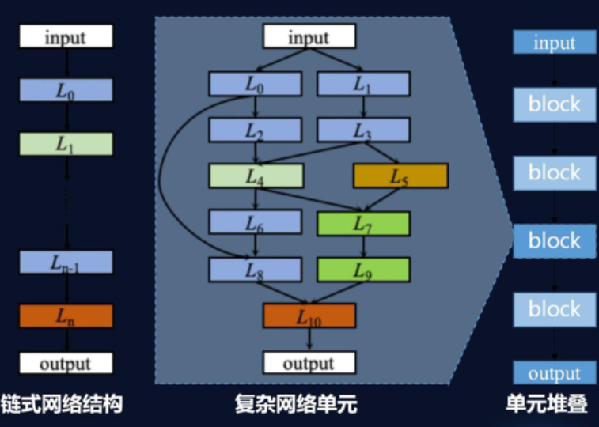
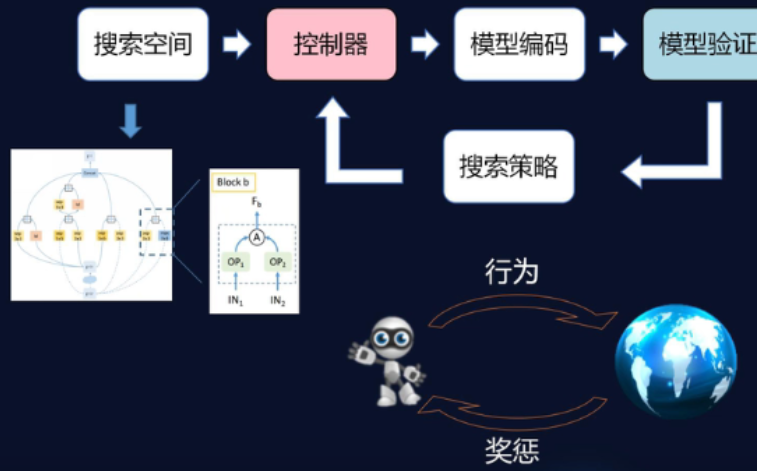
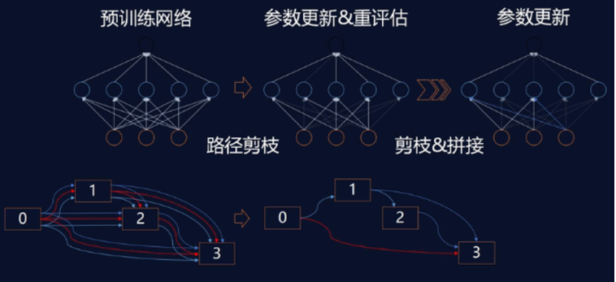

Note-AutoML
Contents
AutoML框架学习记录
AutoML
介绍
- 定义：AutoML可以被定义为一组工具，可以使机器学习解决问题的过程自动化。其中包括数据预处理，特征工程，模型选择与参数优化等过程。
- 三要素：搜索空间、搜索策略、评估准则
- 分类：针对传统机器学习、针对深度学习
- 工具库:
- H2O AutoML：基于Python环境和R环境下的结构化自动机器学习库，支持分布式部署。
- MLBox：快速读取和分布式数据预处理/清理/格式化，深度学习，堆叠网络，LightGBM等。
- AutoGluon：亚马逊发布，涵盖图像、文本或表格数据等实际应用。
传统机器学习AutoML
通常基于bagging或boosting算法的集成学习模型能取得较好的表现效果，e.g., RandomForest, XGBoost, LightGBM
|
|
深度学习AutoML

-
搜索空间表示
- 最大网络层数
- 每层可选的元操作
- 与操作相关的超参数
 -
搜索策略
- 进化计算

- 强化学习NAS
- 网络迁移

AutoGluon
功能
- TabularPredictor
- 特征矩阵预测
- 主要基于传统机器学习模型，也可以处理包含文本、数字和分类列的数据表
- MultiModalPredictor多模态预测
- 融合多个神经网络模型并处理原始文本，也能处理额外的数字列
- 文本：文本分类；提取嵌入向量；文本相似性；命名实体识别
- 图像分类
- 混合数据
- 目标检测
- TimeSeriesPredictor时间序列预测
安装
pip3 install autogluon
使用
- TabularPredictor
|
|
- MultiModalPredictor处理文本-情感分析
|
|
- MultiModalPredictor处理文本-NER
|
|
- 自定义autogluon
- 训练次数hyperparameters={“optimization.max_epochs”: 10}
- 环境
- hyperparameters={“env.num_gpus”: -1}，默认所有gpu可参与训练
- hyperparameters={“env.batch_size”: 128}批处理大小
- hyperparameters={“env.num_workers”: 4}工作进程数
- 数据
- 缺失值处理策略：skip跳过或zero置零
- 数据规范化
|
|
- 官方文档：https://auto.gluon.ai